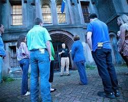
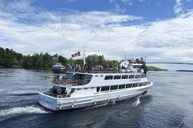

Popular Charleston Tours & Experiences

Walking Tours
Explore Charleston’s streets, pastel houses, and hidden alleys with a fun guide.
Charleston is best discovered on foot, and walking tours are a favorite for groups who want to keep it cute while learning a little something.
- The Flirty Stroll Tour – pastel houses, cobblestones, flower boxes, and fun local tea.
- Food & Cocktail Tour – she-crab soup, benne wafers, bourbon, and more.
- Custom Tour – tailored routes around sweets, shopping, or bar-hopping.
Pro tip: Skip the heels — comfy sandals make the experience way better.

Carriage Rides
Experience Charleston in a horse-drawn carriage with photo ops galore.
Charleston’s iconic carriage tours deliver Southern charm in the sweetest way.
- Sit back and relax – no walking required!
- Photo ops – Rainbow Row, The Battery, and the horse chariot.
- Private rides – so your group can sip iced coffee or mimosas together.

Harbor Cruises
Enjoy sunsets, sea breezes, and unforgettable moments on the water.
Every weekend needs a wow moment — and a harbor cruise delivers.
- Private Charter – your music, your drinks, your vibe.
- Sunset Sail – golden hour glow and city skyline views.
- Party Pontoon – casual fun with coolers and Bluetooth speakers.
Tip: Book early for peak season weekends.